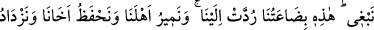
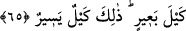
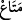

65. Yüklerini açtıklarında sermayelerinin kendilerine geri verilmiş olduğunu
gördüler. Dediler ki: “Ey babamız! Daha ne istiyoruz. İşte sermâyemiz de bize geri
verilmiş. (Onunla yine) ailemize yiyecek getiririz, kardeşimizi koruruz ve bir deve
yükü de fazla alırız. Çünkü bu (seferki aldığımız) az bir miktardır.
Mısır’dan yükledikleri “yüklerini açtıklarında sermayelerinin” fazl u kerem olarak
“kendilerine geri verilmiş” melik (Yûsuf) tarafından teslim edilmiş “olduğunu
gördüler.” Durum bunu gösteriyordu.
Âyette geçen “
” kelimesi aslında kendisinden faydalanılan her şeydir. Burada ise
mecâzî olarak yiyecek kapları, yâni onların yükleri kastedilmiştir. Bu mecâz bir bütünün
bazı parçalarının bütünün tamamı yerine kullanılması kabilindendir. Bazıları bu tür
mecâza eksik hakikat (hakîkat-ı kâsıra) adını verir.
el-İrşâd’da belirtildiği üzere herhalde Yâkub (a.s.) oğulları yüklerini açtıklarında
orada bulunuyordu. el-Kısas’daki şu bilgi de bunu destekler mahiyettedir: Yâkub (a.s.)
oğullarına: “Yüklerinizi getirin de bereketli olması için duâ edeyim.” dedi. Oğulları da
yüklerini getirip babalarının önünde açtılar ve sermayelerinin yüklerinin üstüne
konulmuş olduğunu gördüler.”
Sözün burasında sanki “O zaman ne dediler?” diye sorulmuş ve şöyle cevap
verilmiştir:
İşte bunu görünce babalarına “dediler ki: “Ey babamız! Daha ne istiyoruz?” Böyle
bir iyiliğin ötesinde daha ne isteyebiliriz ki? “İşte” karşılığında bize buğday sattıkları
“sermayemiz de bize geri verilmiş.” Yani bize yapılan bunca büyük ihsanlardan sonra
biz farkında olmadan bir ikram olarak bize iâde edilmiş. Daha ne isteyelim ki!
Yûsuf (a.s.)’ın emrini yerine getirmek ve daha fazlasını elde etmek için tekrar onun
yanına gitmek gerektiği konusunda bu yaptıklarının yeterli olduğunu söylemek istediler.
Onunla yine “ailemize yiyecek getiririz,” Yani yine kralın yanından âilemize yiyecek
getiririz. Sermayelerimiz de bize geri verilmiş olduğuna göre, alım gücümüz artmış
demektir. Öyleyse kralın yanına bir kez daha gidebilir ve yiyecek maddesi getirebiliriz.
“Kardeşimizi” açlık, susuzluk ve sair kötülüklerden “koruruz ve bir deve yükü de
fazla alırız.” Yâni kardeşimiz sayesinde bize bir deve yükü yiyecek daha ölçülüp
verilir. Çünkü azîz adam başına bir deve yükü yiyecek veriyordu.